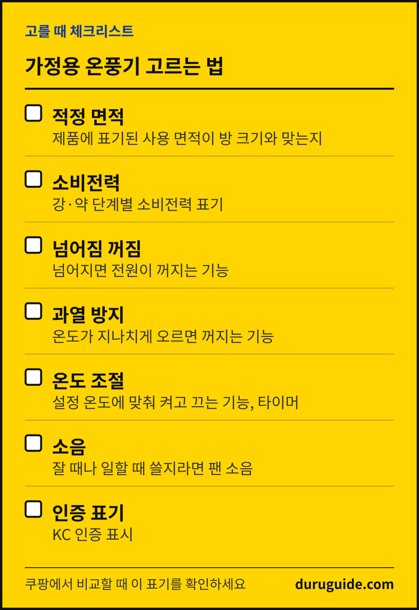

가정용 온풍기 고르는 법, 방 크기와 안전장치부터 보세요
안 사도 되는 경우
창문과 문 틈을 먼저 막아 지낼 만해졌거나, 하루 종일 데울 방이라 보일러 온도 조절이 더 맞는다면 온풍기를 새로 사지 않아도 돼요.
이런 상황이죠
보일러를 틀어도 작은방이나 화장실 앞, 서재처럼 유난히 추운 곳이 있어요. 잠깐 머무는 동안만 빨리 데우고 싶어서 온풍기를 알아보지만, 모양도 크기도 다양하고 전기요금과 안전이 걱정되지요.
왜 생기나
온풍기는 안에서 열을 만든 뒤 팬으로 따뜻한 바람을 보내요. 주변 공기를 데우는 방식이라 켜자마자 따뜻함이 느껴지는 편이에요. 대신 방이 넓거나 외풍이 심하면 데운 공기가 금방 빠져나가 효과가 약해져요. 그리고 전기로 열을 만드는 제품은 소비전력이 큰 편이라, 콘센트와 멀티탭에 부담이 갈 수 있어요.
사기 전에 먼저 해볼 것
- 외풍부터 막아요. 창문 틈과 문 아래로 바람이 들어오면 아무리 데워도 금방 식어요. 문풍지나 방풍비닐로 먼저 막아 보세요.
- 쓸 시간을 생각해요. 하루 종일 켤 방이라면 온풍기보다 보일러 온도 조절이나 다른 난방 방식이 나을 수 있어요. 온풍기는 짧게, 필요한 공간만 데울 때 잘 맞아요.
-
콘센트를 확인해요. 온풍기는 벽 콘센트에 단독으로 꽂는 게 안전해요. 놓을 자리 근처에 쓸 수 있는 콘센트가 있는지 먼저 보세요.
-
놓을 자리를 정해요. 바닥에 두는 스탠드형인지, 책상 위에 올리는 소형인지에 따라 고를 제품이 달라져요. 지나다니는 길목은 발에 걸려 넘어질 수 있으니 피하세요.
전기요금은 소비전력과 켜 두는 시간으로 정해져요. 강 단계로 오래 틀기보다 처음에 빨리 데우고 약 단계나 온도 설정으로 유지하면 부담을 줄일 수 있어요.
고를 때 체크리스트
| 확인 항목 | 보는 기준 |
|---|---|
| 적정 면적 | 제품에 표기된 사용 면적이 방 크기와 맞는지 |
| 소비전력 | 강·약 단계별 소비전력 표기 |
| 넘어짐 꺼짐 | 넘어지면 전원이 꺼지는 기능 |
| 과열 방지 | 온도가 지나치게 오르면 꺼지는 기능 |
| 온도 조절 | 설정 온도에 맞춰 켜고 끄는 기능, 타이머 |
| 소음 | 잘 때나 일할 때 쓸지라면 팬 소음 |
| 인증 표기 | KC 인증 표시 |
이런 분께는 맞지 않아요
- 넓은 거실 전체를 오래 데우려는 용도라면 온풍기만으로는 아쉬울 수 있어요.
- 바람이 얼굴에 닿는 게 불편하다면 바람이 없는 라디에이터 계열이 더 맞을 수 있어요.
안전하게 쓰려면
커튼, 이불, 옷, 종이에서 충분히 떨어뜨려 두세요. 멀티탭에 다른 기기와 함께 꽂지 말고, 전원선이 뜨거워지거나 냄새가 나면 바로 끄세요. 잠들거나 외출할 때는 꺼 두고, 아이나 반려동물이 바람 나오는 곳에 닿지 않게 해 주세요. 욕실처럼 물이 튀는 곳에는 방수 표기가 있는 전용 제품을 쓰세요.
추천 제품 찾기
먼저 데울 방의 크기와 하루에 쓰는 시간, 놓을 자리의 콘센트 위치를 정하세요. 쿠팡에서는 적정 면적, 소비전력, 넘어짐 꺼짐과 과열 방지 기능, 타이머 표기를 비교해 보시면 돼요. 현재 가격은 쿠팡에서 확인해 주세요.

이 포스팅은 쿠팡 파트너스 활동의 일환으로, 이에 따른 일정액의 수수료를 제공받습니다.
이 콘텐츠는 토스쇼핑 쉐어링크 활동의 일환으로, 링크를 통한 구매가 발생하면 일정 수수료를 지급받습니다.